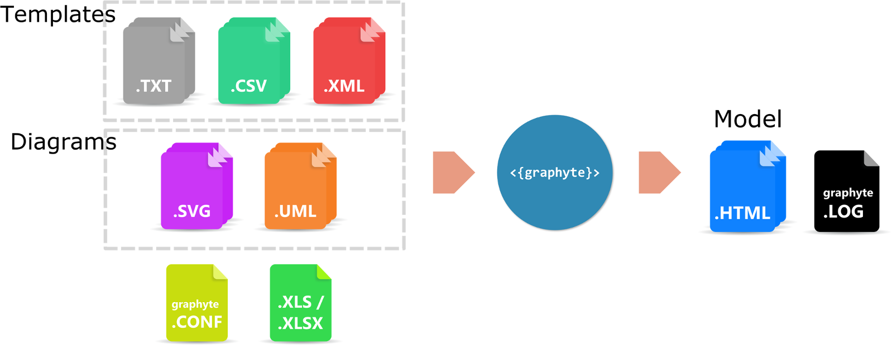

Graphyte Step-by-Step Guide
In order to generate a new model from scratch follow steps 1 to 6.
For subsequent model revisions, update your source files and re-run graphyte (step 6).
| Step | Chapter(s) |
|---|---|
| 1. Create your template files (.txt, .csv, .xml). | Creating Templates |
| 2. Create your diagrams (.svg, .uml). | Creating SVG diagrams with Microsoft Visio |
| Creating SVG diagrams with Draw.io | |
| Creating SVG diagrams with Inkscape | |
| Creating UML diagrams for Graphyte | |
| 3. Link diagram elements to their corresponding template. | Linking Input Diagrams and Templates |
| 4. (Optional) If parameter validation is desired, create your list of authorized parameters (.xls/.xlsx). | Creating a Variable List |
| 5. Create your graphyte.conf file. | Graphyte Configuration File |
| 6. Run graphyte. | Running Graphyte |
Your model is now generated. For model revision/troubleshooting:
| Step |
|---|
| 7. Verify execution log on graphyte.log file. |
| 8. Review your generated model. Update desired templates using the text editor integrated in the viewer. |
| 9. Update the version number in the graphyte.conf file. |
| 10. Run graphyte. A new revision of the model is generated. |
